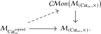

We conclude by applying the coherent algebra developed in this part to connective complex K-theory. Direct sum and tensor product should make the moduli anima of complex vector bundles into a commutative semiring object. We first explain the general mechanism by which distributivity produces such semiring objects. We then construct the tensor-product structure on vector bundles explicitly in Lurie’s \(\Fin _*\)-model, where the multilinear maps of bundles are naturally indexed by the fibers of pointed maps, and use the comparison of Proposition 17.4.8. Finally, we combine the resulting semiring structure with symmetric monoidal group completion to obtain the commutative ring spectrum structure on \(\ku \) used in Chapter 9.
19.7.1 Semirings from distributivity
The tensor product \(\otimes _{\mathrm {coprod}}\) of Section 22.4 is characterized by functors which preserve finite coproducts separately in each variable. The following proposition relates this universal property directly to the Day convolution tensor product on commutative monoids.
Lemma 19.7.1. Interpreted one universe higher, the \(\infty \)-category \(\Cat _{\infty }^{\mathrm {coprod}}\) is presentable and semiadditive. Its zero object is the terminal category, and the cartesian product \(C\times D\) is also the coproduct of \(C\) and \(D\). Moreover, the tensor product \(\otimes _{\mathrm {coprod}}\) makes \(\Cat _{\infty }^{\mathrm {coprod}}\) presentably symmetric monoidal.
Proof. Presentability is the finite-coproduct case of [Lurie (2017), Lemma 4.8.4.2]. Finite products are computed in \(\Cat _{\infty }\) and therefore given by cartesian products of \(\infty \)-categories. The terminal category is also initial in \(\Cat _{\infty }^{\mathrm {coprod}}\), since a finite-coproduct-preserving functor from it to \(C\) must select an initial object of \(C\).
Let \(0_C\) and \(0_D\) denote initial objects. For every \(E\in \Cat _{\infty }^{\mathrm {coprod}}\), restriction along the functors \[ C\longrightarrow C\times D,\quad c\longmapsto (c,0_D), \qquad \text {and}\qquad D\longrightarrow C\times D,\quad d\longmapsto (0_C,d), \] induces an equivalence \[ \Fun ^{\amalg }(C\times D,E) \iso \Fun ^{\amalg }(C,E)\times \Fun ^{\amalg }(D,E). \] Indeed, the coproduct functor \(\amalg \colon E\times E\to E\), which is left adjoint to the diagonal and therefore preserves finite coproducts, supplies an inverse which sends a pair \((F,G)\) to the composite \[ C\times D\xrightarrow {F\times G}E\times E\xrightarrow {\amalg }E. \] The two composites are naturally isomorphic to the identity because every \((c,d)\) is the coproduct of \((c,0_D)\) and \((0_C,d)\) in \(C\times D\). Thus \(C\times D\) is also a coproduct in \(\Cat _{\infty }^{\mathrm {coprod}}\), proving semiadditivity.
Finally, the defining universal property of \(\otimes _{\mathrm {coprod}}\) exhibits tensoring with a fixed object as a left adjoint. It therefore preserves colimits, which proves the final assertion. □
Proposition 19.7.2 (Cocartesian semiring construction). The functor \[ \Cat _{\infty }^{\mathrm {coprod}}\longrightarrow \CMon (\Cat _{\infty }), \qquad C\longmapsto (C,\amalg ), \] has a canonical lax symmetric monoidal refinement, where the source carries \(\otimes _{\mathrm {coprod}}\) and the target carries the symmetric monoidal structure of Proposition 16.4.1.
Proof. Write \[ U\colon \Cat _{\infty }^{\mathrm {coprod}}\longrightarrow \Cat _{\infty } \] for the forgetful functor. The multimorphism operad defining \(\otimes _{\mathrm {coprod}}\) is, by construction in Section 22.4, a suboperad of the cartesian multimorphism operad of \(\Cat _{\infty }\). This inclusion gives \(U\) a canonical lax symmetric monoidal structure.
By Lemma 19.7.1, the multimorphism operad of \(\Cat _{\infty }^{\mathrm {coprod}}\) is semiadditive. Moreover, \(U\) preserves finite products, since they are computed by cartesian products of \(\infty \)-categories on both sides. The adjunction of Theorem 18.4.12 therefore gives a unique lift

By the definition of \(\oCMon \) and the Day convolution structure of Proposition 16.4.1, the upper-right operad is naturally equivalent to the multimorphism operad of \(\CMon (\Cat _{\infty })\): \[ \oCMon \bigl (\Mm _{(\Cat _{\infty },\times )}\bigr ) \simeq \Mm _{\CMon (\Cat _{\infty })}. \] The lift consequently determines a lax symmetric monoidal functor from \(\Cat _{\infty }^{\mathrm {coprod}}\) to \(\CMon (\Cat _{\infty })\). On an object \(C\), it gives the commutative monoid structure induced by the biproducts in \(\Cat _{\infty }^{\mathrm {coprod}}\). Its unit selects the initial object \(0_C\), while its addition is the codiagonal \[ C\times C\simeq C\oplus C\longrightarrow C. \] Under the description of the coproduct in Lemma 19.7.1, this codiagonal is the coproduct functor \(\amalg \colon C\times C\to C\). Thus the underlying functor sends \(C\) to \((C,\amalg )\), as claimed. □
There is consequently a general mechanism that turns distributivity over finite coproducts into a commutative semiring object.
Proposition 19.7.3. Let \(C\) be a small symmetric monoidal \(\infty \)-category which admits finite coproducts. Assume that for every object \(X\in C\), the functor \[ X\otimes -\colon C\longrightarrow C \] preserves finite coproducts. Then the cocartesian monoidal structure on \(C\) canonically refines \(C\) to an object of \[ \CRig (\Cat _{\infty })=\CAlg (\CMon (\Cat _{\infty })). \]
Proof. The finite-coproduct specialization in Section 22.4 exhibits the given symmetric monoidal structure on \(C\) as a commutative algebra object of \((\Cat _{\infty }^{\mathrm {coprod}},\otimes _{\mathrm {coprod}})\). Applying the lax symmetric monoidal functor of Proposition 19.7.2 produces a commutative algebra in \(\CMon (\Cat _{\infty })\), whose underlying commutative monoid is the cocartesian monoidal structure \((C,\amalg )\). □
Corollary 19.7.4. Under the hypotheses of Proposition 19.7.3, the maximal subgroupoid \(C^{\simeq }\) is canonically an object of \(\CRig (\An )\).
Proof. Apply the lax symmetric monoidal maximal-subgroupoid functor of Proposition 16.4.6 to the commutative algebra supplied by Proposition 19.7.3. □
19.7.2 The vector-bundle semiring
Let \(X\) be a topological space. We write \(\Vect ^{\disc }(X)\) for the 1-category whose objects are the finite-rank complex vector bundles over \(X\) and whose morphisms are the morphisms of vector bundles over \(X\). The superscript \(\disc \) indicates that we are not yet recording the topology on spaces of bundle maps. Since vector bundles are stable under base change along continuous maps, this gives a contravariant functor \[ \Vect ^{\disc }\colon \Top \catop \to \Cat . \] We show that \(\Vect ^{\disc }(X)\) can be equipped with a symmetric monoidal structure via tensor product of complex vector bundles. We construct this structure explicitly using Lurie’s equivalent model of symmetric monoidal categories over \(\Fin _*\).
Construction 19.7.5. For a finite pointed set \(S_+\), we write \(S\) for the complement of the basepoint. Define a 1-category \[ \Vect ^{\otimes ,\disc }(X) \] equipped with a functor \(p_X\colon \Vect ^{\otimes ,\disc }(X) \to \Fin _*\) as follows. An object over \(S_+\) is an \(S\)-indexed family \((V_s)_{s \in S}\) of vector bundles over \(X\). A morphism over a pointed map \(\alpha \colon S_+ \to T_+\) from \((V_s)_{s \in S}\) to \((W_t)_{t \in T}\) consists of, for every \(t \in T\), a map over \(X\) \[ \phi _t\colon \prod _{s \in \alpha ^{-1}(t)} V_s \longrightarrow W_t \] which is continuous and complex multilinear on each fiber. Here the product is the fiber product over \(X\), and if \(\alpha ^{-1}(t)=\emptyset \) we interpret the source as \(X\), so that \(\phi _t\) is the same as a section of \(W_t\).
Composition is substitution of multilinear maps. Thus, if \(\beta \colon T_+ \to U_+\) is another pointed map and \(\psi _u\colon \prod _{t \in \beta ^{-1}(u)}W_t \to Z_u\) is the corresponding family of multilinear maps, the composite over \(\beta \alpha \) is given by \[ (v_s)_{s \in (\beta \alpha )^{-1}(u)} \longmapsto \psi _u\left ( \left (\phi _t((v_s)_{s \in \alpha ^{-1}(t)})\right )_{t \in \beta ^{-1}(u)} \right ). \] This is again multilinear in all variables. The identity morphism over \(\id _{S_+}\) is given by the identity maps \(V_s \to V_s\).
Proposition 19.7.6. The functor \[ p_X\colon \Vect ^{\otimes ,\disc }(X) \to \Fin _* \] is a cocartesian fibration of 1-categories. It therefore defines a symmetric monoidal 1-category whose underlying category is \(\Vect ^{\disc }(X)\) and whose tensor product is the tensor product of vector bundles.
Proof. Let \(\alpha \colon S_+ \to T_+\) be a pointed map and let \((V_s)_{s \in S}\) be an object over \(S_+\). For each \(t \in T\), choose the tensor product \[ W_t := \bigotimes _{s \in \alpha ^{-1}(t)} V_s, \] with the convention that the tensor product over the empty set is the trivial line bundle \(\ul {\C }\). Let \[ \mu _t\colon \prod _{s \in \alpha ^{-1}(t)} V_s \to W_t \] be the universal multilinear map. Local trivializations show that \(W_t\) is again a vector bundle and that \(\mu _t\) is continuous. These maps define a morphism \[ (V_s)_{s \in S} \longrightarrow (W_t)_{t \in T} \] over \(\alpha \).
We claim that this morphism is \(p_X\)-cocartesian. Let \(\beta \colon T_+ \to U_+\) be another pointed map, and let \((Z_u)_{u \in U}\) be an object over \(U_+\). By definition, a morphism from \((W_t)_{t \in T}\) to \((Z_u)_{u \in U}\) over \(\beta \) is a family of multilinear maps \[ \prod _{t \in \beta ^{-1}(u)} W_t \to Z_u. \] Precomposition with the maps \(\mu _t\) identifies this set with the set of multilinear maps \[ \prod _{s \in (\beta \alpha )^{-1}(u)} V_s \to Z_u, \] for all \(u \in U\), by the universal property of the tensor products \(W_t\). This is precisely the required universal property of a cocartesian morphism.
The fiber over \(S_+\) is visibly \(\Vect ^{\disc }(X)^S\), so the Segal maps are isomorphisms. Thus \(p_X\) is a symmetric monoidal category in Lurie’s model. Taking nerves gives the corresponding cocartesian fibration of \(\infty \)-categories, and the equivalence of operad models from Proposition 17.4.8 carries it to the desired symmetric monoidal \(\infty \)-category over \(\Span (\Fin )\). Its tensor product is obtained by pushing forward along the active map \(\{1,2\}_+ \to \{1\}_+\), hence is the usual tensor product of vector bundles. □
The symmetric monoidal structure above interacts with the direct-sum operation in the expected way. The general semiring formalism of Section 16.4 packages all the resulting coherence.
Corollary 19.7.7. For every topological space \(X\), the groupoid \[ \Vect ^{\disc }(X)^{\simeq } \] of finite-rank complex vector bundles and bundle isomorphisms is naturally an object of \(\CRig (\An )\). This structure is contravariantly functorial in \(X\) by pullback.
Proof. Direct sum gives finite coproducts in the small 1-category \(\Vect ^{\disc }(X)\), with initial object the rank-zero bundle \(\ul {0}\). Tensor product distributes over direct sums in each variable, so Corollary 19.7.4 applies to the symmetric monoidal structure of Proposition 19.7.6. This construction is natural in symmetric monoidal functors which preserve finite coproducts. Since pullback preserves direct sums, tensor products, and trivial bundles, it gives the asserted functoriality in \(X\). □
The 1-category \(\Vect ^{\disc }(X)\) discards the natural compact-open topologies on its hom sets. Let us first explain how the familiar topological enrichment motivates the construction below. Suppose that \(X\) is compact Hausdorff. The spaces \(\Iso _X(E,E')\) of bundle isomorphisms, with their compact-open topologies, form the hom spaces of a topologically enriched groupoid. Its homotopy coherent nerve, in the sense of Construction 24.3.2, remembers the underlying anima of each of these spaces of isomorphisms by Proposition 24.3.4.
The simplicial resolution used to construct this nerve has the same vector bundles as objects in every degree, while its morphisms in degree \(n\) are the continuous maps \[ \Hom _{\Top }(\abs {\Delta ^n},\Iso _X(E,E')). \] The total spaces of vector bundles over a compact Hausdorff space are locally compact Hausdorff, so the compact-open exponential law identifies this set with \[ \Iso _{X\times \abs {\Delta ^n}} \bigl (\pr _X^*E,\pr _X^*E'\bigr ). \] Thus the groupoid in simplicial degree \(n\) is equivalent to the full subgroupoid of \(\Vect ^{\disc }(X\times \abs {\Delta ^n})^{\simeq }\) spanned by the bundles pulled back from \(X\). Every vector bundle over \(X\times \abs {\Delta ^n}\) is isomorphic to one of this form by Theorem 9.1.4. Consequently the inclusion of this full subgroupoid is an equivalence. For compact Hausdorff \(X\), the colimit below is therefore the standard simplicial model for the homotopy coherent nerve of the topologically enriched groupoid of vector bundles and bundle isomorphisms. We use the same formula as our definition for an arbitrary topological space.
Definition 19.7.8. The cosimplicial topological space \([n]\mapsto \abs {\Delta ^n}\) and pullback of vector bundles determine a simplicial object \[ [n]\longmapsto \Vect ^{\disc }(X\times \abs {\Delta ^n})^{\simeq } \] in \(\CRig (\An )\). We define the moduli anima of complex vector bundles over \(X\) by \[ \Vect (X)^{\simeq } := \colim _{[n]\in \simp \catop } \Vect ^{\disc }(X\times \abs {\Delta ^n})^{\simeq } \qin \CRig (\An ). \]
Thus points of \(\Vect (X)^{\simeq }\) are represented by vector bundles over \(X\), paths are represented by concordances over \(X\times [0,1]\), and the higher simplices encode higher concordances. For compact Hausdorff \(X\), this models how the topology on the spaces of bundle isomorphisms enters the homotopy coherent nerve. The simplicial description also makes direct sums and tensor products available degreewise.
Proposition 19.7.9. The construction of Definition 19.7.8 defines a functor \[ \Vect (-)^{\simeq }\colon \Top \catop \longrightarrow \CRig (\An ). \] Its underlying anima is computed by the same colimit in \(\An \). If \(X\) is paracompact Hausdorff, the inclusion of the zeroth simplicial degree induces a natural bijection \[ \pi _0\Vect ^{\disc }(X)^{\simeq } \xrightarrow {\cong } \pi _0\Vect (X)^{\simeq }. \]
Proof. Functoriality follows from pullback. The \(\infty \)-category \(\simp \catop \) is sifted by Proposition 21.6.9, and the forgetful functors \[ \CRig (\An )\longrightarrow \CMon (\An )\longrightarrow \An \] create sifted colimits. For the second functor, this follows by regarding \(\CMon (\An )\) as the full subcategory of \(\Fun (\Span (\Fin ),\An )\) spanned by the finite-product-preserving functors: pointwise sifted colimits preserve this condition by Lemma 21.6.11. For the first functor, use \(\CRig (\An )=\CAlg (\CMon (\An ))\), the fact that \(\CMon (\An )\) is presentably symmetric monoidal by Theorem 18.5.3, and [Lurie (2017), Corollary 3.2.3.2]. This proves the assertion about the underlying anima.
It remains to identify its path components. Applying \(\pi _0\) to the geometric realization gives the coequalizer of the two maps from simplicial degree \(1\) to degree \(0\). Every vector bundle over \(X\times \abs {\Delta ^n}\) is isomorphic to the pullback of its restriction to a vertex: the product \(X\times \abs {\Delta ^n}\) is again paracompact Hausdorff, and the identity is homotopic to the composite of the projection with the inclusion of a vertex, so this follows from Theorem 9.1.4. In particular, degree \(0\) surjects onto the coequalizer. The two endpoint restrictions of a vector bundle over \(X\times [0,1]\) are isomorphic by the same theorem, so the two maps in the coequalizer agree. The coequalizer is therefore \(\pi _0\Vect ^{\disc }(X)^{\simeq }\). □
Corollary 19.7.10. The construction of Definition 19.7.8, applied to finite-rank real vector bundles, defines a functor \[ \Vect _{\R }(-)^{\simeq }\colon \Top \catop \longrightarrow \CRig (\An ) \] whose underlying anima is computed by the corresponding colimit in \(\An \).
Proof. The constructions and proofs of Proposition 19.7.6, Corollary 19.7.7, Proposition 19.7.9 apply verbatim with \(\C \) replaced by \(\R \). □
We now specialize to \(X=\pt \). Recall from Subsection 9.4.2 that the group completion of \(\Vect (\pt )^{\simeq }\) is the infinite loop anima underlying connective complex K-theory. The semiring structure above supplies its multiplication and all its coherences.
Proposition 19.7.11. The connective complex K-theory spectrum \(\ku \) admits a canonical structure of commutative ring spectrum.
Proof. By Definition 19.7.8, we have \[ \Vect (\pt )^{\simeq } \in \CAlg (\CMon (\An )). \] By Proposition 16.6.4, the composite \[ \CMon (\An ) \xrightarrow {(-)^{\grp }} \CGrp (\An ) \xhookrightarrow {\bB ^{\infty }} \Sp \] is symmetric monoidal. Applying it to the commutative algebra object \(\Vect (\pt )^{\simeq }\) gives a commutative algebra object of \(\Sp \), i.e. a commutative ring spectrum. Under Theorem 5.4.6, the functor \(\bB ^{\infty }\colon \CGrp (\An )\to \Sp _{\geq 0}\) is the inverse of the recognition equivalence, and \((-)^{\grp }\) is the same group-completion left adjoint used in Subsection 9.4.2. Its underlying spectrum is therefore precisely \(\ku \). □
Exercises
Exercise 19.1 (Free modules). Let \(C\) be a presentably monoidal \(\infty \)-category and let \(A\in \Alg (C)\).
- (1)
-
Use Proposition 19.1.13 to show that the free-module functor preserves coproducts, and compute the free \(A\)-module on a finite coproduct.
- (2)
-
Specialize to \(C=\Sp \) and identify the free \(R\)-module on \(\S [n]\) for an associative ring spectrum \(R\).
Exercise 19.2 (Transitivity of extension of scalars). Let \(A\to B\to C\) be morphisms of associative algebras in a presentably monoidal \(\infty \)-category. For a left \(A\)-module \(M\), construct a natural isomorphism \[ C\otimes _B(B\otimes _AM)\simeq C\otimes _AM. \] Check that it identifies the composite of the two extension-of-scalars adjunctions with extension of scalars along \(A\to C\).
Exercise 19.3 (Consequences of spectral Eilenberg–Watts). Let \(R\) be an associative ring spectrum, and for an \(R\)-\(R\)-bimodule \(B\) write \(F_B:=-\otimes _RB\).
- (1)
-
Show that natural transformations \(F_B\to F_{B'}\) correspond to morphisms of \(R\)-\(R\)-bimodules \(B\to B'\).
- (2)
-
Identify the bimodule corresponding to the composite \(F_{B'}\circ F_B\).
- (3)
-
Identify the bimodule corresponding to the identity functor of \(\RMod _R\).
Exercise 19.4 (Advanced: Matrix Morita equivalence). Let \(R\) be an associative ring spectrum, put \(P:=R^{\oplus n}\in \RMod _R\), and let \[ A:=\hom _R(P,P). \]
- (1)
-
Show that \(P\) is a compact generator of \(\RMod _R\), and identify \(A\) with the matrix ring spectrum \(M_n(R)\).
- (2)
-
The construction of Proposition 19.5.5 gives an adjunction \[ -\otimes _AP\colon \RMod _A\rightleftarrows \RMod _R\noloc \hom _R(P,-). \] Adapt the generator argument in the proof of Theorem 19.5.6 to show that this adjunction is an equivalence.
Generated from the authoritative LaTeX source.